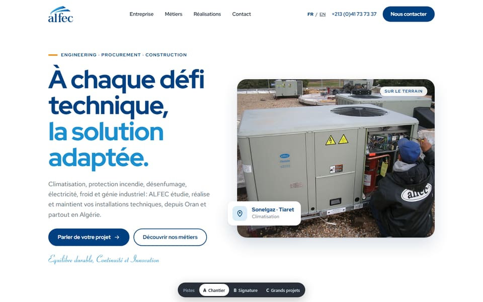
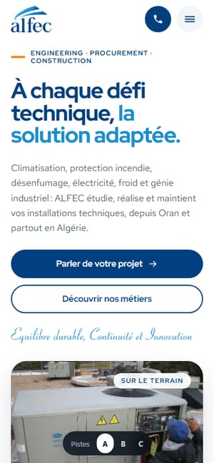
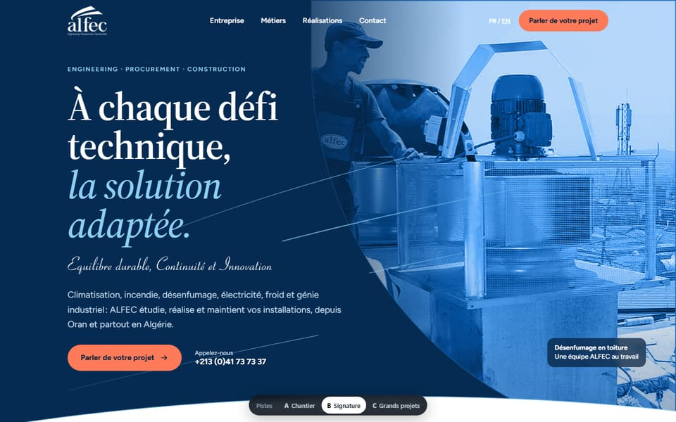
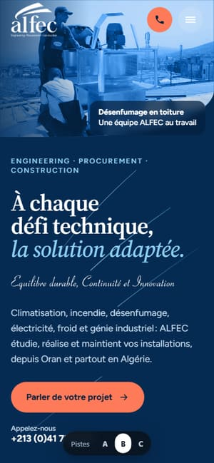
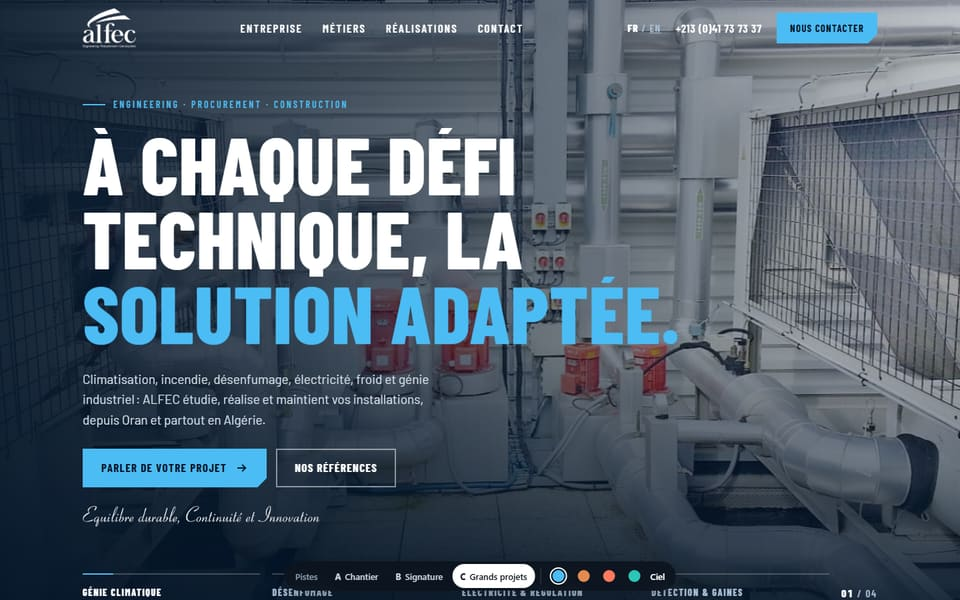
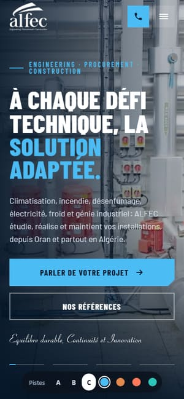

Refonte du site alfec.net
Refonte du site alfec.netTrois pistes graphiques pour la page d’accueil
Elles s’appuient sur vos réponses au questionnaire. Le contenu est le même dans les trois : seule la direction graphique change. Choisissez celle qui vous ressemble le plus, ou dites-nous ce que vous aimeriez emprunter à chacune.
Dans les trois pistes, d’après vos réponses
- Votre accroche : « À chaque défi technique, la solution adaptée. »Question 11
- Le génie climatique en premier, votre métier d’origineQuestion 17
- Un ton plus chaleureux, moins « grand groupe »Questions 1, 2 et 5
- Le bleu ALFEC, avec une couleur d’accentQuestion 7
- Des formes plus souples, des animations et des effets au survolQuestion 9
- Le retour du slogan manuscritQuestion 8
- La carte des 22 wilayas, les références et le cycle étude, réalisation, maintenance conservésQuestion 10
- Des emplacements pour vos témoignages et les logos de vos partenairesQuestions 13 et 14
- Une page d’accueil plus courte sur téléphoneQuestion 19
- Aucun chiffre, client ou témoignage inventé : tout ce qui manque est marqué « À fournir par ALFEC »


A
Chantier
La plus proche du site que vous nous avez montré : fond blanc et lumineux, vos équipes sur le terrain en ouverture, cartes arrondies, carrousel des métiers.
- Couleurs
- Points forts
- Chaleureuse, rassurante, facile à lire.
- À savoir
- C’est la piste qui dépend le plus de photos récentes et de bonne qualité.
Voir la piste A →


B
Signature ALFEC
Votre identité mise en scène : le bleu du logo, une typographie à empattements qui rappelle votre logo, le slogan manuscrit et les courbes de votre logo animées comme un flux d’air.
- Couleurs
- Points forts
- La plus reconnaissable, la plus « ALFEC ».
- À savoir
- Le traitement bleu des photos masque leur qualité inégale : c’est la moins dépendante des photos.
Voir la piste B →


C
Grands projets
Moderne et ambitieuse : fond bleu nuit, photos qui défilent en ouverture, grands titres en capitales, métiers qui s’ouvrent au survol, carte du réseau depuis Oran.
- Couleurs
- Points forts
- La plus dynamique, met en avant l’industrie et les références.
- À savoir
- Elle demande davantage de références documentées pour tenir sa promesse.
Voir la piste C →
Ce dont nous avons besoin de votre part
- Des photos récentes de vos chantiers et de vos équipesIdéalement une demi-journée de prise de vue sur deux ou trois chantiers en cours. C’est ce qui fera la plus grande différence, quelle que soit la piste.
- La liste des clients que nous pouvons citerAvec leur accord, et leur logo si possible.
- Deux ou trois témoignages de clientsQuelques phrases, avec le nom, la fonction et l’organisme.
- Les logos de vos marques partenairesAu format vectoriel (SVG, AI ou PDF) si vous les avez.
Maquettes de la page d’accueil uniquement, en français. Les liens vers les autres pages ne sont pas actifs. Les photos sont celles du site actuel.